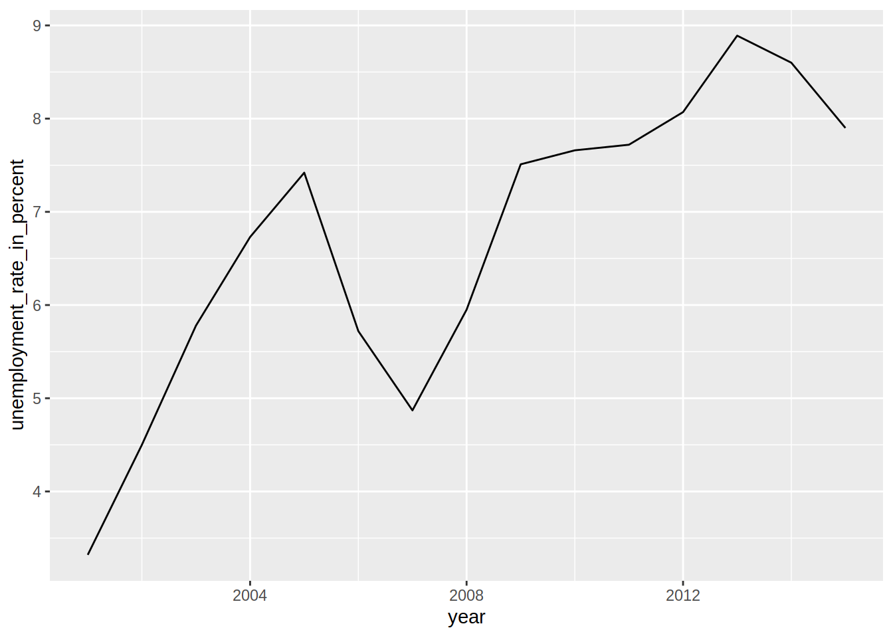

Chapter 6 Graphs
By default, it is possible to make a lot of graphs with R without the need of any external
packages. However, in this chapter, we are going to learn how to make graphs using ggplot2 which
is a very powerful package that produces amazing graphs. There is an entry cost to ggplot2 as it
works in a very different way than what you would expect, especially if you know how to make plots
with the basic R functions already. But the resulting graphs are well worth the effort and once
you’ll know more about ggplot2 you’ll see that in a lot of situations it is actually faster
and easier. Even if you are not interested in drawing plots, I advise you continue reading, as we
will dig deeper into functional programming territory and learn how to graph an arbitrary large
amount of plots with a few lines of code.
6.1 Resources
Before showing some examples and the general functionality of ggplot2, I list here some online
resources that I keep coming back to:
I have a cookbook approach to using ggplot2; I try to find an example online that looks similar
to what I have in mind, copy and paste the code and then adapt it to my case. The above resources
are the ones I consult the most in these situations (I also go back to past code I’ve written, of
course). Don’t hesitate to skim these resources for inspiration and to learn more about some
extensions to ggplot2. In the next subsections I am going to show you how to draw the most common
plots, as well as show you how to customize your plots with ggthemes.
6.2 Examples
6.2.1 Barplots
To follow the examples below, load the following libraries:
ggplot2 is an implementation of the Grammar of Graphics by Wilkinson (2006), but you don’t need
to read the books to start using it. If we go back to the Star Wars data (contained in dplyr),
and wish to draw a barplot of the gender, the following lines are enough:

The first argument of the function is the data (called starwars in this example), and then the
function aes(). This function is where you list the variables you want to map, and to quote the
help file of aes(), describes how the variables are mapped to visual properties (aesthetics) of
geoms. You can get different kind of plots by using different geom_ functions.
You can also change the coordinate system in your barplot:

6.2.2 Density
geom_density() is the geom that allows you to get density plots:
## Warning: Removed 6 rows containing non-finite values (stat_density).
Let’s go into more detail now; what if you would like to plot the densities for females and males
only (removing the droids from the data first)? This can be done by first filtering the data using
dplyr and then separating the dataset by gender:
The above lines do the filtering; only keep gender if gender is in the vector "female", "male".
This is much easier than having to write gender == "female" | gender == "male". Then, we pipe
this dataset to ggplot:
starwars %>%
filter(gender %in% c("female", "male")) %>%
ggplot(aes(height, fill = gender)) +
geom_density()## Warning: Removed 5 rows containing non-finite values (stat_density).
Let’s take a closer look to the aes() function: I’ve added fill = gender. This means that the
there will be one density plot for each gender in the data, and each will be coloured accordingly.
This is where ggplot2 might be confusing; there is no need to write explicitly (even if it is
possible) that you want the female density to be red and the male density to be blue. You just
map the variable gender to this particular aesthetic. You conclude the plot by adding
geom_density() which is this case is the plot you want. We will see later how to change the
colours of your plot.
6.2.3 Line plots
For the line plots, we are going to use official unemployment data (the same as in the previous chapter, but with all the available years). Get it from here (downloaded from: http://www.statistiques.public.lu/stat/TableViewer/tableView.aspx?ReportId=12950&IF_Language=eng&MainTheme=2&FldrName=3&RFPath=91).
Let’s plot the unemployment for the canton of Luxembourg only:
unemp_lux_data = import("datasets/unemployment/all/unemployment_lux_all.csv")
unemp_lux_data %>%
filter(division == "Luxembourg") %>%
ggplot(aes(year, unemployment_rate_in_percent, group = 1)) +
geom_line()
Because line plots are 2D, you need to specify the y and x axes. There is also another option you
need to add, group = 1. This is to tell aes() that the dots have to be connected with a single
line. What if you want to plot more than one commune?
unemp_lux_data %>%
filter(division == "Luxembourg" | division == "Esch-sur-Alzette") %>%
ggplot(aes(year, unemployment_rate_in_percent, group = division, colour = division)) +
geom_line()
This time, I’ve specified group = division which means that there has to be one line per as many
communes as in the variable division. I do the same for colours. I think the next example
illustrates how ggplot2 is actually brilliant; if you need to add a third commune, there is no
need to specify anything else; no need to add anything to the legend, no need to specify a third
colour etc:
unemp_lux_data %>%
filter(division %in% c("Luxembourg", "Esch-sur-Alzette", "Wiltz")) %>%
ggplot(aes(year, unemployment_rate_in_percent, group = division, colour = division)) +
geom_line()
6.2.4 Facets
In some case you have a factor variable that separates the data you wish to plot into different
categories. If you want to have a plot per category you can use the facet_grid() function.
Careful though, this function does not take a variable as an argument, but a formula, hence the ~
symbol in the code below:
starwars %>%
mutate(human = case_when(species == "Human" ~ "Human",
species != "Human" ~ "Not Human")) %>%
filter(gender %in% c("female", "male"), !is.na(human)) %>%
ggplot(aes(height, fill = gender)) +
facet_grid(. ~ human) + #<--- this is a formula
geom_density()## Warning: Removed 4 rows containing non-finite values (stat_density).
By changing the formula, you change how the facetting is done:
starwars %>%
mutate(human = case_when(species == "Human" ~ "Human",
species != "Human" ~ "Not Human")) %>%
filter(gender %in% c("female", "male"), !is.na(human)) %>%
ggplot(aes(height, fill = gender)) +
facet_grid(human ~ .) +
geom_density()## Warning: Removed 4 rows containing non-finite values (stat_density).
Recall the categorical variable more_1 that we computed in the previous chapter? Let’s use it as
a faceting variable:
starwars %>%
rowwise() %>%
mutate(n_films = length(films)) %>%
mutate(more_1 = case_when(n_films == 1 ~ "Exactly one movie",
n_films != 1 ~ "More than 1 movie")) %>%
mutate(human = case_when(species == "Human" ~ "Human",
species != "Human" ~ "Not Human")) %>%
filter(gender %in% c("female", "male"), !is.na(human)) %>%
ggplot(aes(height, fill = gender)) +
facet_grid(human ~ more_1) +
geom_density()## Warning: Removed 4 rows containing non-finite values (stat_density).
6.2.5 Pie Charts
I am not a huge fan of pie charts, but sometimes this is what you have to do. So let’s see how you
can create pie charts.
First, let’s create a mock dataset with the function tibble::tribble() which allows you to create a
dataset line by line:
test_data <- tribble(
~id, ~var1, ~var2, ~var3, ~var4, ~var5,
"a", 26.5, 38, 30, 32, 34,
"b", 30, 30, 28, 32, 30,
"c", 34, 32, 30, 28, 26.5
)This data is not in the right format though, which is wide. We need to have it in the long format
for it to work with ggplot2. For this, let’s use tidyr::gather() as seen in the previous chapter:
Now, let’s plot this data, first by creating 3 bar plots:
ggplot(test_data_long) +
facet_wrap(~id) +
geom_bar(aes(variable, value, fill = variable), stat = "identity")
In the code above, I introduce a new option, called stat = "identity". By default, geom_bar() counts
the number of observations of each category that is plotted, which is a statistical transformation.
By adding stat = "identity", I force the statistical transformation to be the identity function, and
thus plot the data as is.
To create the pie chart, first we need to compute the share of each id to var1, var2, etc…
To do this, we first group by id, then compute the total. Then we use a new function ungroup().
After using ungroup() all the computations are done on the whole dataset instead of by group, which
is what we need to compute the share:
test_data_long = test_data_long %>%
group_by(id) %>%
mutate(total = sum(value)) %>%
ungroup() %>%
mutate(share = value/total)Let’s take a look to see if this is what we wanted:
## # A tibble: 15 x 5
## id variable value total share
## <chr> <chr> <dbl> <dbl> <dbl>
## 1 a var1 26.5 160. 0.165
## 2 b var1 30 150 0.2
## 3 c var1 34 150. 0.226
## 4 a var2 38 160. 0.237
## 5 b var2 30 150 0.2
## 6 c var2 32 150. 0.213
## 7 a var3 30 160. 0.187
## 8 b var3 28 150 0.187
## 9 c var3 30 150. 0.199
## 10 a var4 32 160. 0.199
## 11 b var4 32 150 0.213
## 12 c var4 28 150. 0.186
## 13 a var5 34 160. 0.212
## 14 b var5 30 150 0.2
## 15 c var5 26.5 150. 0.176If you didn’t understand what ungroup() did, rerun the last few lines with it and inspect the
output.
To plot the pie chart, we create a barplot again, but specify polar coordinates:
ggplot(test_data_long) +
facet_wrap(~id) +
geom_bar(aes(y = share, x = "", fill = variable), stat = "identity") +
theme() +
coord_polar("y", start = 0)
As you can see, this typical pie chart is not very easy to read; compared to the barplots above it
is not easy to distinguish a from b from c. It is possible to amend the pie chart a bit to
make it clearer, by specifying variable as the x:
ggplot(test_data_long) +
facet_wrap(~id) +
geom_bar(aes(y = share, x = variable, fill = variable), stat = "identity") +
theme() +
coord_polar("x", start = 0)
But as a general rule, avoid pie charts if possible. Barplots show the same information, much, much clearer.
6.2.6 Adding text to plots
Sometimes you might want to add some text to your plots. This is possible with geom_text():
ggplot(test_data_long) +
facet_wrap(~id) +
geom_bar(aes(variable, value, fill = variable), stat = "identity") +
geom_text(aes(variable, value + 1.5, label = value))
You can put anything after label =but in general what you’d want are the values, so that’s what
I put there. But you can also refine it, imagine the values are actualy, say €:
ggplot(test_data_long) +
facet_wrap(~id) +
geom_bar(aes(variable, value, fill = variable), stat = "identity") +
geom_text(aes(variable, value + 1.5, label = paste(value, "€")))
6.3 Customization
Every plot you’ve seen until now was made with the default look of ggplot2. If you want to change
the look, you can apply a theme, and a colour scheme. Let’s take a look at themes first by using the
ones found in the package ggthemes. But first, let’s learn how to change the names of the axes
and how to title a plot.
6.3.1 Titles, axes names and more
To change the title of the plot, and of the axes, you need to pass the names to the labs()
function:
unemp_lux_data %>%
filter(division %in% c("Luxembourg", "Esch-sur-Alzette", "Wiltz")) %>%
ggplot(aes(year, unemployment_rate_in_percent, group = division, colour = division)) +
labs(title = "Unemployment in Luxembourg, Esch/Alzette and Wiltz", x = "Year", y = "Rate") +
geom_line()
What if you want to make the lines thicker?
unemp_lux_data %>%
filter(division %in% c("Luxembourg", "Esch-sur-Alzette", "Wiltz")) %>%
ggplot(aes(year, unemployment_rate_in_percent, group = division, colour = division)) +
labs(title = "Unemployment in Luxembourg, Esch/Alzette and Wiltz", x = "Year", y = "Rate") +
geom_line(size = 2)
6.3.2 Themes
Let’s go back to the unemployment line plots. For now, let’s keep the base ggplot2 theme, but
modify it a bit. For example, the legend placement is actually a feature of the theme. This means
that if you want to change where the legend is placed you need to modify this feature from the
theme. This is done with the function theme():
unemp_lux_data %>%
filter(division %in% c("Luxembourg", "Esch-sur-Alzette", "Wiltz")) %>%
ggplot(aes(year, unemployment_rate_in_percent, group = division, colour = division)) +
theme(legend.position = "bottom") +
labs(title = "Unemployment in Luxembourg, Esch/Alzette and Wiltz", x = "Year", y = "Rate")+
geom_line()
What I also like to do is remove the title of the legend, because it is often superfluous:
unemp_lux_data %>%
filter(division %in% c("Luxembourg", "Esch-sur-Alzette", "Wiltz")) %>%
ggplot(aes(year, unemployment_rate_in_percent, group = division, colour = division)) +
theme(legend.position = "bottom", legend.title = element_blank()) +
labs(title = "Unemployment in Luxembourg, Esch/Alzette and Wiltz", x = "Year", y = "Rate")+
geom_line()
The legend title has to be an element_text object.element_text objects are used with theme to
specify how text should be displayed. element_blank() draws nothing and assigns no space (not
even blank space).
You could modify every feature of the theme like that, but there are built-in themes that you can use:
unemp_lux_data %>%
filter(division %in% c("Luxembourg", "Esch-sur-Alzette", "Wiltz")) %>%
ggplot(aes(year, unemployment_rate_in_percent, group = division, colour = division)) +
theme_minimal() +
theme(legend.position = "bottom", legend.title = element_blank()) +
labs(title = "Unemployment in Luxembourg, Esch/Alzette and Wiltz", x = "Year", y = "Rate") +
geom_line()
For example in the code above, I have used theme_minimal() which I like quite a lot. You can also
use themes from the ggthemes package, which even contains a STATA theme, if you like it:
unemp_lux_data %>%
filter(division %in% c("Luxembourg", "Esch-sur-Alzette", "Wiltz")) %>%
ggplot(aes(year, unemployment_rate_in_percent, group = division, colour = division)) +
theme_stata() +
labs(title = "Unemployment in Luxembourg, Esch/Alzette and Wiltz", x = "Year", y = "Rate") +
geom_line()
As you can see, theme_stata() has the legend on the bottom by default, because this is how the
legend position is defined within the theme. However the legend title is still there. Let’s remove
it:
unemp_lux_data %>%
filter(division %in% c("Luxembourg", "Esch-sur-Alzette", "Wiltz")) %>%
ggplot(aes(year, unemployment_rate_in_percent, group = division, colour = division)) +
theme_stata() +
theme(legend.title = element_blank()) +
labs(title = "Unemployment in Luxembourg, Esch/Alzette and Wiltz", x = "Year", y = "Rate") +
geom_line()
ggthemes even features an Excel 2003 theme (don’t use it though):
unemp_lux_data %>%
filter(division %in% c("Luxembourg", "Esch-sur-Alzette", "Wiltz")) %>%
ggplot(aes(year, unemployment_rate_in_percent, group = division, colour = division)) +
theme_excel() +
labs(title = "Unemployment in Luxembourg, Esch/Alzette and Wiltz", x = "Year", y = "Rate") +
geom_line()
6.3.3 Colour schemes from ggthemes
You can also change colour schemes, by specifying either scale_colour_* or scale_fill_*
functions. scale_colour_* functions are used for continuous variables, while scale_fill_*
functions for discrete variables (so for barplots for example). A colour scheme I like is the
Highcharts colour scheme.
unemp_lux_data %>%
filter(division %in% c("Luxembourg", "Esch-sur-Alzette", "Wiltz")) %>%
ggplot(aes(year, unemployment_rate_in_percent, group = division, colour = division)) +
theme_minimal() +
scale_colour_hc() +
theme(legend.position = "bottom", legend.title = element_blank()) +
labs(title = "Unemployment in Luxembourg, Esch/Alzette and Wiltz", x = "Year", y = "Rate") +
geom_line()
An example with a barplot:
ggplot(test_data_long) +
facet_wrap(~id) +
geom_bar(aes(variable, value, fill = variable), stat = "identity") +
geom_text(aes(variable, value + 1.5, label = value)) +
theme_minimal() +
scale_fill_hc()
6.3.4 Using your own colours
To use your own colours you can use scale_colour_manual() and scale_fill_manual() and specify
the html codes of the colours you want to use.
unemp_lux_data %>%
filter(division %in% c("Luxembourg", "Esch-sur-Alzette", "Wiltz")) %>%
ggplot(aes(year, unemployment_rate_in_percent, group = division, colour = division)) +
theme_minimal() +
scale_colour_manual(values = c("#FF336C", "#334BFF", "#2CAE00")) +
theme(legend.position = "bottom", legend.title = element_blank()) +
labs(title = "Unemployment in Luxembourg, Esch/Alzette and Wiltz", x = "Year", y = "Rate") +
geom_line()
To get html codes of colours you can use this online
tool.
There is also a very nice package, called colourpicker that allows you to
pick colours from with RStudio. Also, you do not even need to load it to use
it, since it comes with an Addin:

For a barplot you would do the same:
ggplot(test_data_long) +
facet_wrap(~id) +
geom_bar(aes(variable, value, fill = variable), stat = "identity") +
geom_text(aes(variable, value + 1.5, label = value)) +
theme_minimal() +
theme(legend.position = "bottom", legend.title = element_blank()) +
scale_fill_manual(values = c("#FF336C", "#334BFF", "#2CAE00", "#B3C9C6", "#765234"))
6.3.5 Saving plots on disk
There are two ways to save plots on disk; one through the Plots in RStudio and another using the
ggsave() function. Using RStudio, navigate to the Plots pane and click on Export. You can
then choose where to save the plot and other various options:

This is fine if you only generate one or two plots but if you generate a large number of them, it
is less tedious to use the ggsave() function:
my_plot1 = ggplot(my_data) +
geom_bar(aes(variable))
ggsave("path/you/want/to/save/the/plot/to/my_plot1.pdf", my_plot1)There are other options that you can specify such as the width and height, resolution, units, etc…
6.4 Many plots
In this section, we are going to learn how to use the possibilities offered by the purrr package
and how it can work together with ggplot2 to generate many plots. This is a more advanced topic,
but what comes next is also what makes R, and the functional programming paradigm so powerful.
For example, suppose that instead of wanting a single plot with the unemployment rate of each commune, you need one unemployment plot, per commune:
unemp_lux_data %>%
filter(division == "Luxembourg") %>%
ggplot(aes(year, unemployment_rate_in_percent, group = division)) +
theme_minimal() +
labs(title = "Unemployment in Luxembourg", x = "Year", y = "Rate") +
geom_line()
and then you would write the same for “Esch-sur-Alzette” and also for “Wiltz”. If you only have to make to make these 3 plots, copy and pasting the above lines is no big deal:
unemp_lux_data %>%
filter(division == "Esch-sur-Alzette") %>%
ggplot(aes(year, unemployment_rate_in_percent, group = division)) +
theme_minimal() +
labs(title = "Unemployment in Esch-sur-Alzette", x = "Year", y = "Rate") +
geom_line()
unemp_lux_data %>%
filter(division == "Wiltz") %>%
ggplot(aes(year, unemployment_rate_in_percent, group = division)) +
theme_minimal() +
labs(title = "Unemployment in Esch-sur-Alzette", x = "Year", y = "Rate") +
geom_line()
Put copy and pasting is error prone. Can you spot the copy-paste mistake I made? And what if you
have to create the above plots for all 108 Luxembourguish communes? That’s a lot of copy pasting.
What if, once you are done copy pasting, you have to change something, for example, the theme? You
could use the search and replace function of RStudio, true, but sometimes search and replace can
also introduce bugs and typos. You can avoid all these issues by using purrr::map(). What do you
need to map over? The commune names. So let’s create a vector of commune names:
Now we can create the graphs using map(), or map2() to be exact:
plots_tibble = unemp_lux_data %>%
filter(division %in% communes) %>%
group_by(division) %>%
nest() %>%
mutate(plot = map2(.x = data, .y = division, ~ggplot(data = .x) +
theme_minimal() +
geom_line(aes(year, unemployment_rate_in_percent, group = 1)) +
labs(title = paste("Unemployment in", .y))))Let’s study this line by line: the first line is easy, we simply use filter() to keep only the
communes we are interested in. Then we group by division and use tidyr::nest(). As a refresher,
let’s take a look at what this does:
## # A tibble: 3 x 2
## division data
## <chr> <list>
## 1 Esch-sur-Alzette <tibble [15 × 7]>
## 2 Luxembourg <tibble [15 × 7]>
## 3 Wiltz <tibble [15 × 7]>This creates a tibble with two columns, division and data, where each individual (or
commune in this case) is another tibble with all the original variables. This is very useful,
because now we can pass these tibbles to map2(), to generate the plots. But why map2() and
what’s the difference with map()? map2() works the same way as map(), but maps over two
inputs:
## [[1]]
## [1] 9
##
## [[2]]
## [1] 16
##
## [[3]]
## [1] 21
##
## [[4]]
## [1] 24
##
## [[5]]
## [1] 25In our example with the graphs, the two inputs are the data, and the names of the communes. This is
useful to create the title with labs(title = paste("Unemployment in", .y)))) where .y is the
second input of map2(), the commune names contained in variable division.
So what happened? We now have a tibble called plots_tibble that looks like this:
## # A tibble: 3 x 3
## division data plot
## <chr> <list> <list>
## 1 Esch-sur-Alzette <tibble [15 × 7]> <S3: gg>
## 2 Luxembourg <tibble [15 × 7]> <S3: gg>
## 3 Wiltz <tibble [15 × 7]> <S3: gg>This tibble contains three columns, division, data and now a new one called plot, that we
created before using the last line mutate(plot = ...) (remember that mutate() adds columns to
tibbles). plot is a list-column, with elements… being plots! Yes you read that right, the
elements of the column plot are literally plots. This is what I meant with list columns.
Let’s see what is inside the data and the plot columns exactly:
## [[1]]
## # A tibble: 15 x 7
## year active_populati… of_which_non_wa… of_which_wage_e…
## <int> <dbl> <dbl> <dbl>
## 1 2001 11.3 665 10.1
## 2 2002 11.7 677 10.3
## 3 2003 11.7 674 10.2
## 4 2004 12.2 659 10.6
## 5 2005 11.9 654 10.3
## 6 2006 12.2 657 10.5
## 7 2007 12.6 634 10.9
## 8 2008 12.9 638 11.0
## 9 2009 13.2 652 11.0
## 10 2010 13.6 638 11.2
## 11 2011 13.9 630 11.5
## 12 2012 14.3 684 11.8
## 13 2013 14.8 694 12.0
## 14 2014 15.2 703 12.5
## 15 2015 15.3 710 12.6
## # ... with 3 more variables: total_employed_population <dbl>,
## # unemployed <dbl>, unemployment_rate_in_percent <dbl>
##
## [[2]]
## # A tibble: 15 x 7
## year active_populati… of_which_non_wa… of_which_wage_e…
## <int> <dbl> <dbl> <dbl>
## 1 2001 34.4 2.89 30.4
## 2 2002 34.8 2.94 30.3
## 3 2003 35.2 3.03 30.1
## 4 2004 35.6 3.06 30.1
## 5 2005 35.6 3.13 29.8
## 6 2006 35.5 3.12 30.3
## 7 2007 36.1 3.25 31.1
## 8 2008 37.5 3.39 31.9
## 9 2009 37.9 3.49 31.6
## 10 2010 38.6 3.54 32.1
## 11 2011 40.3 3.66 33.6
## 12 2012 41.8 3.81 34.6
## 13 2013 43.4 3.98 35.5
## 14 2014 44.6 4.11 36.7
## 15 2015 45.2 4.14 37.5
## # ... with 3 more variables: total_employed_population <dbl>,
## # unemployed <dbl>, unemployment_rate_in_percent <dbl>
##
## [[3]]
## # A tibble: 15 x 7
## year active_populati… of_which_non_wa… of_which_wage_e…
## <int> <dbl> <dbl> <dbl>
## 1 2001 2.13 223 1.79
## 2 2002 2.14 220 1.78
## 3 2003 2.18 223 1.79
## 4 2004 2.24 227 1.85
## 5 2005 2.26 229 1.85
## 6 2006 2.20 206 1.82
## 7 2007 2.27 198 1.88
## 8 2008 2.30 200 1.90
## 9 2009 2.36 201 1.94
## 10 2010 2.42 195 1.97
## 11 2011 2.48 190 2.02
## 12 2012 2.59 188 2.10
## 13 2013 2.66 195 2.15
## 14 2014 2.69 185 2.19
## 15 2015 2.77 180 2.27
## # ... with 3 more variables: total_employed_population <dbl>,
## # unemployed <dbl>, unemployment_rate_in_percent <dbl>each element of data is a tibble for the specific country with columns year, active_population,
etc, the original columns. But obviously, there is no division column. So to plot the data, and
join all the dots together, we need to add group = 1 in the call to ggplot2() (whereas if you
plot multiple lines in the same graph, you need to write group = division).
But more interestingly, how can you actually see the plots? If you want to simply look at them, it
is enough to use pull():
## [[1]]
##
## [[2]]
##
## [[3]]
And if we want to save these plots, we can do so using map2():
Saving 7 x 5 in image
Saving 6.01 x 3.94 in image
Saving 6.01 x 3.94 in imageThis was probably the most advanced topic we have studied yet; but you probably agree with me that
it is among the most useful ones. This section is a perfect illustration of the power of functional
programming; you can mix and match functions as long as you give them the correct arguments.
You can pass data to functions that use data and then pass these functions to other functions that
use functions as arguments, such as map().1 map() does not care if the functions you pass to it produces tables,
graphs or even another function. map() will simply map this function to a list of inputs, and as
long as these inputs are correct arguments to the function, map() will do its magic. If you
combine this with list-columns, you can even use map() alongside dplyr functions and map your
function by first grouping, filtering, etc…
6.5 Exercises
Exercise 1
This exercise will force you to look for ggplot2 functions that you don’t know yet. But it’s a
good exercise, so my advice is to try to do it, even if takes you a long time to find the right
functions.
Load the Bwages dataset from the Ecdat package. Your first task is to create a new variable,
educ_level, which is a factor variable that equals:
- “Primary school” if
educ == 1 - “High school” if
educ == 2 - “Some university” if
educ == 3 - “Master’s degree” if
educ == 4 - “Doctoral degree” if
educ == 5
Use case_when() for this.
Then, plot a scatter plot of wages on experience, by education level. Add a theme that you like, and remove the title of the legend.
The scatter plot is not very useful, because you cannot make anything out. Instead, use another geom that shows you a non-parametric fit with confidence bands. You do not need to estimate a model or anything like that, you just need to find the right geom.
References
Wilkinson, Leland. 2006. The Grammar of Graphics. Springer Science & Business Media.
Functions that have other functions as input are called higher order functions↩